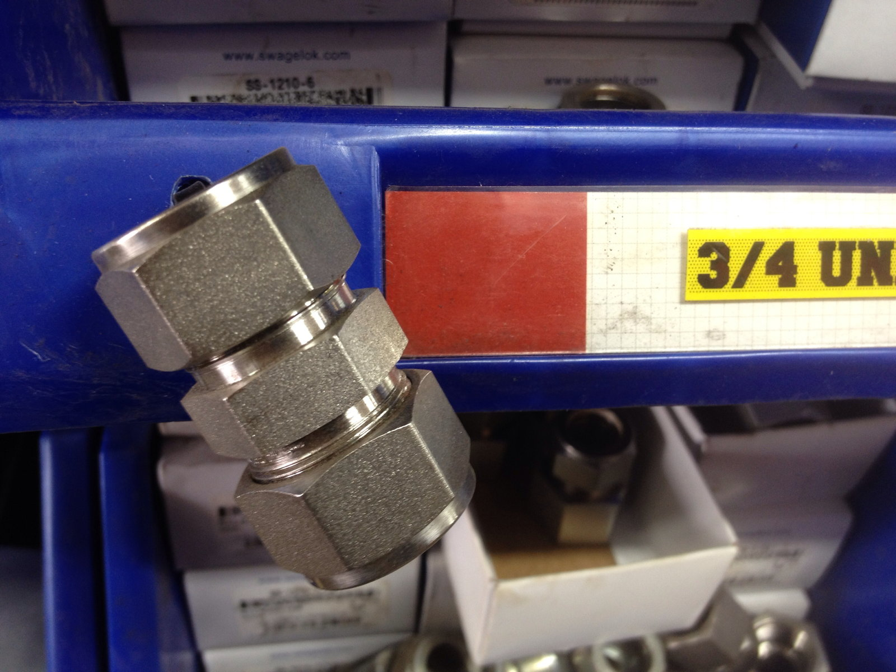

饮料设备
一批辅助气路快换接头先统一螺纹版本，再按端口清单分批供货。该案例接头不用于直接接触食品的流路。
目录分为快换接头与卡套接头，按接口和材料查找。先选类型，再按管径、螺纹和密封材料核对参数。
用于设备辅助回路的拆装位置。
| 通径 | DN8–DN25 |
|---|---|
| 额定压力 | 2.5 MPa |
| 主体材质 | 316L |
| 密封材料 | FKM |
| 接口螺纹 | G1/4–G1 |
询盘给通径、介质、温度、压力和接口图。FKM 的介质相容性及额定压力对应的温度条件按订单技术要求确认。
用于小口径刚性管连接；卡套连接侧重管材与端口配合。
| 管外径 | 6–22 mm |
|---|---|
| 额定压力 | 16 MPa |
| 主体材质 | 316 |
| 卡套硬度 | HRC 20–24 |
| 工作温度 | −20–180 ℃ |
询盘给管外径、壁厚、管材、介质、温度压力与端口图，装配前核对卡套和管材配合；不同供应方零件不承诺混装互换。

G 螺纹不能直接与 NPT 互换，端口和密封方式按图确认。
具体用途按介质和技术要求逐单确认。
一批辅助气路快换接头先统一螺纹版本，再按端口清单分批供货。该案例接头不用于直接接触食品的流路。
卡套样品先与采购方提供的管外径、壁厚配合，采购技术方确认该项目的介质相容性后，再签批量版本。
多种接口按装配工位分袋，袋签写订单行号和批次，该项目的管路设计与安装由设备方完成。
Swagelok fitting — Jason Woodhead; https://www.flickr.com/photos/80365963@N00/7178664334; CC BY 2.0 (https://creativecommons.org/licenses/by/2.0/); derivative: full-frame downsample and JPEG re-encoding by photo-clarity, 2026-10-06; no content edits.